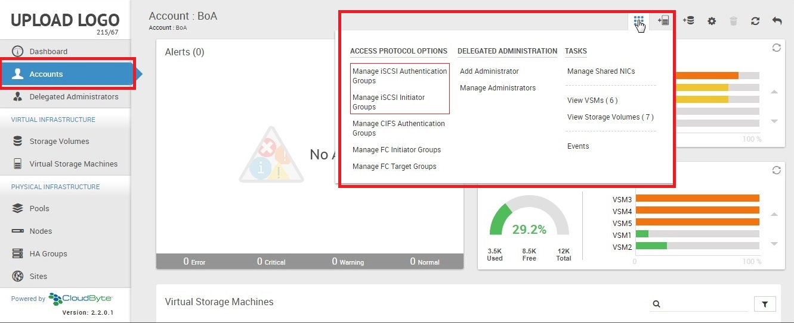
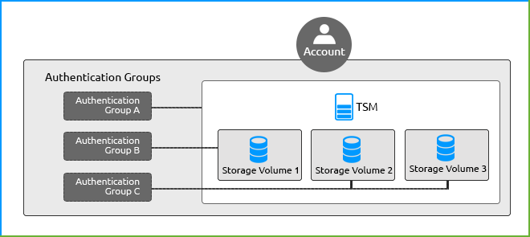

Data access using iSCSI
iSCSI is Internet SCSI (Small Computer System Interface), an Internet Protocol (IP)-based storage networking standard for linking data storage connections. By offering SCSI commands over IP networks, iSCSI is used to transmit data over intranets. For further details, see http://en.wikipedia.org/wiki/ISCSI.
iSCSI concepts
Authentication Group: A grouping of multiple iSCSI users. Use this option if you use CHAP or mutual CHAP. You can configure Authentication group at both VSM and Storage Volume levels.
CHAP: An authentication method which uses a user/secret or IQNs for outgoing authentication. The Storage Volumes on CloudByte ElastiStor authenticate the initiator.
Mutual CHAP: A super set of CHAP which uses peer user/peer secret for outgoing/incoming authentication between Storage Volumes and initiator.
Initiator group: Defines who can initiate the LUN.
It is a combination of multiple IQNs. By default, CloudByte ElastiStor creates two initiator groups (all where everyone can initiate the LUN and none where no one can). After you create the Storage Volume, when you manage the iSCSI options, you are prompted to choose an initiator group. You can either select the default one or the ones that you create. You configure initiator group in the Storage Volume.

iSCSI configuration workflow
You configure iSCSI at the following levels:
- Account
- VSM
- Storage Volume
The following figure illustrates the work flow for configuring the iSCSI protocol options:
Account iSCSI options
Configuring iSCSI at account level involves the following tasks:
- In ElastiCenter, Navigation Pane select Accounts.
- In the Accounts page, select the account for which you want to specify the protocol options.
- In the actions Icon, select the protocol option and then specify the details.

Manage iSCSI Authentication Groups
In the Add Authentication Group dialog box, specify the following details:
| Field | Description |
| Name | A unique name for the authentication group. |
| Description | A meaningful description for the authentication group. |
| CHAP Username | Username for CHAP authentication. For uniqueness, specify the initiator IQN name as username. |
| CHAP Secret | Password for CHAP authentication in alpha-numeric format. The password must have 12 to 16 characters. |
| Mutual CHAP Username | Username for mutual CHAP authentication. For uniqueness, specify the initiator IQN name as username. The value must be same as that of the CHAP user. |
| Mutual CHAP Secret | Password for mutual CHAP authentication (should be different from CHAP secret). The password must have 12 to 16 characters. |
Initiator Groups
In the Add Intiator Group dialog box, specify the following details:
| Field | Description |
| Name | Unique name of the initiator group. |
| Allowed Intiator | List of allowed initiators, separated by comma. |
| Authorized Networks | List of allowed networks followed by subnet mask in the format 10.0.0.0/8, separated by comma. |
VSM iSCSI Options
This is the set of iSCSI options specific to a VSM. By default, CloudByte ElastiStor creates a default VSM iSCSI options group defaultwhich contains industry standard options. After you create the VSM, when you manage the iSCSI
options, you are prompted to choose the VSM iSCSI options group. You can either select the default one or the ones that you create.
| Field | Description |
| IQN Name | Specify a unique IQN. |
| Number of worker threads | Select the number of worker threads. |
| Discovery Auth Method | Specify the authentication method. |
| Discovery Auth Group | Specify the authentication group. |
| Timeout | Sets the limit on how long an I/O can be outstanding before an error occurs. Values range from 0 to 300. The default value is 30. |
| NOPIN Interval | The frequency of sending a NOP-IN packet in seconds. The values range from 0 to 300. The default value is 20. |
| MAX R2T | Specify a value between 1 and 255. The default value is 32. |
| Max Sessions | Specify a value between 1 and 64. The default value is 8. |
| Max Connections | Specify a value between 1 and 64. The default value is 16. |
| First Burst Length | Maximum data in bytes that an iSCSI initiator may send to the target during the execution of a single iSCSI command unsolicited. Values range from 1 to 2^32 with a default of 65,536. |
| Max Burst Length | Maximum WRITE size in bytes the target is willing to receive between R2Ts. Values range from 1-2^32. The default value is 262,144. |
| Max Receive Data Segment length | In bytes. Values range from 1 to 2^32. The default value is 262,144. |
| Max Outstanding R2T | Maximum number of ready to receive packets (R2Ts) the target can have as outstanding. This is for a single iSCSI command,where larger values should yield performance increases until MaxOutstandingR2T exceeds the size of the largest Write I/O divided by MaxBurstLength. Values range from 1 to 255. The default value is 16. |
| Default time to wait | Minimum time in seconds to wait before attempting a logout or an active task reassignment after an unexpected connection termination/reset. Values range from 1 to 300. The default value is 2. |
| Default time to retain | Maximum time in seconds after Time2Wait before which an active task reassignment is still possible after an unexpected connection termination/reset. Values range from 1 to 300. The default value is 60. |
Volume iSCSI Options
This is the set of iSCSI options specific to a Storage Volume. By default, CloudByte ElastiStor creates a default Volume iSCSI options group default which contains industry standard options. After you create the VSM, when you
manage the iSCSI options, you are prompted to choose the Volume iSCSI options group. You can either select the default one or the ones that you create.
| Field | Description |
| Status | Select either Enabled or Disabled. |
| IQN Name | Specify the unique IQN. |
| Authentication Method | Specify the authentication method. |
| Authentication Group | Specify the authentication group. |
| Initiator Group | Specify the initiator group. |
| Initial Digest | Select one of the advanced data integrity options. |
| iSCSI Block Length | Select the block length. |
| Queue Depth | Pending I/O requests for the Volume. The values range from 0-255. 0 implies that the status disabled. The default value is 32. |
Configuration scenarios
The following scenarios explain iSCSI configuration in detail:
Scenario 1: Assigning the same iSCSI initiator groups to two Storage Volumes under a VSM
iSCSI initiator groups can be configured for only Storage Volumes based on initiator groups in the account. For example, Storage Volumes under the VSM can have different iSCSI initiator groups.
For procedures, see "Configuring initiator group and restricting access"
Scenario 2: Assigning different authentication groups to multiple Storage Volumes under a VSM

You can have different authentication groups for VSMs and Storage Volumes.
For procedures, see "iSCSI access control workflow"
iSCSI access control workflow
An initiator group defines who can initiate the LUN. After you create the Storage Volume, when you manage the iSCSI options, you are prompted to choose an initiator group. Data access to the iSCSI Storage Volume can be restricted to either a single machine or to multiple machines in a Subnet.
Configuring initiator group and restricting access
- In the ElastiCenter Navigation Pane select Accounts.
- In the Accounts page, select the account for which you want to specify the protocol options.
- Select Manage iSCSI Initiator Groups in the Actions Icon.
- Select Add Initiator Group in the Tasks menu.
- Provide the required details.
| Field | Description |
| Name | Unique name of the initiator group. |
| Allowed Intiator | List of IQNs, separated by comma for restricting the access to iSCSI Storage Volume from multiple machines in a Subnet. |
| Authorized Networks | List of allowed networks, followed by subnet mask in the format 10.0.0.0/8, separated by comma. |
- Click OK.
- In the Storage Volumes page, select the Storage Volume to which you want to assign the initiator.
- Select Manage iSCSI Configuration (Actions icon > Tasks).
- Click Edit, enter the required details, and then save the changes.
- In the Confirmation dialog box, click Modify.
iSCSI authentication workflow
An iSCSI Authentication Group is a grouping of multiple iSCSI users. You can select the users who can access the iSCSI target. After you create users, you can group them as iSCSI users for authentication.
- In the ElastiCenter, Navigation Pane select Accounts.
- In the Accounts page, select the account for which you want to specify the protocol options.
- Select Manage iSCSI Authentication Groups in the Actions icon.
- In the Following Screen click Add iSCSI Authentication Group in Actions Icon
- Enter the required details and then click OK.
| Field | Description |
| Name | A unique name for the authentication group. |
| Description | A meaningful description for the authentication group. |
| CHAP Username | Username for CHAP authentication. For uniqueness, specify the initiator IQN name as username. CHAP is an authentication method which uses a user/secret or IQNs for outgoing authentication. The Storage Volumes on CloudByte ElastiStor authenticate the initiator. |
| CHAP Secret | Password for CHAP authentication in alpha-numeric format.The password must have 12 to 16 characters. |
| Mutual CHAP Username | Username for mutual CHAP authentication. For uniqueness, specify the initiator IQN name as username. The value must be same as that of the CHAP user. Mutual CHAP is a super set of CHAP which uses peer user/peer secret for outgoing/incoming authentication between Storage Volumes and initiator. |
| Mutual CHAP Secret | Password for mutual CHAP authentication (should be different from CHAP secret). |
| Description | The password must have 12 to 16 characters. |
- In the Navigation Pane Select Storage Volumes page, select the Storage Volume for which you want to assign the authentication group.
- Select Manage iSCSI Configuration (Actions Icon > Tasks).
- Click Edit, enter the required details, and then click Save. In the following screen, you have selected CHAP as the authentication method.
- In the Confirmation dialog box, click Modify.
Restricting access to iSCSI VSM by managing Authentication Groups
The procedures are same as in the section Restricting access to iSCSI Storage Volume by managing Authentication Groups except that, instead of Storage Volume, you have to select VSM from step 7 onward.
Installing MPIO on Windows Server
Multipath I/O (MPIO) is a Microsoft-provided framework that allows storage providers to develop Multipath solutions that contain hardware-specific information required to optimize connectivity with storage arrays. MPIO provides an alternate data path between storage devices and Windows operating system. MPIO is protocol-independent and can be used with Fibre Channel (FC), Internet SCSI (iSCSI) and Serial Attached SCSI (SAS) interfaces.
Installing MPIO functionality involves the following procedures:
Note: The following documentation is for Windows Server 2008. The procedures are similar for other versions of Windows Server. However, there might be minor variations owing to the differences in UI strings and navigation.
- On Windows Server, select Multipath I/O and then click Install (Server Manager Console > Add Features Wizard).
Note: This step can be skipped if Multipath I/O is already installed.
- Restart the Windows Server after you complete the installation.
- After reboot, configure Multipath as follows:
- Open MPIO application (Start > Administrative Tools > MPIO).
- Click Discover Multipaths tab.
- Enable Add support for iSCSI devices.
- Click Add.
.png)
- In the Reboot required dialog box click Yes.
After reboot, a new device called "MSFT2005IBusType 0x9" (or similar ID) appears in the MPIO Properties.